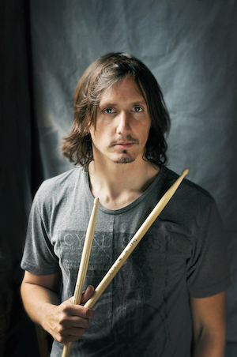

Currently studying web development at Le Wagon
| drummer picture | |
|---|---|
| Keith John Moon (23 August 1946[1] – 7 September 1978) was an English drummer for the rock band the Who. He was noted for his unique style and his eccentric, often self-destructive behaviour. | |
|  | Mario Duplantier (born 19 June 1981 in Bayonne, France) is a French musician and artist best known as the drummer for progressive death metal band Gojira. |
| Bernard Lee "Pretty" Purdie (born June 11, 1939) is an American drummer, considered an influential and innovative funk musician.[1] He is known for his precise musical time keeping[2] and his signature use of triplets against a half-time backbeat: the "Purdie Shuffle." |